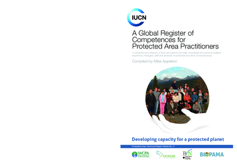
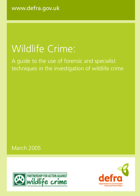
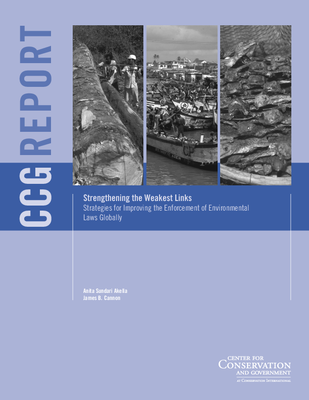
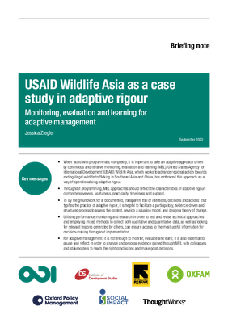
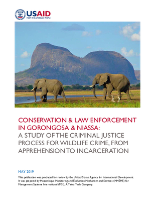
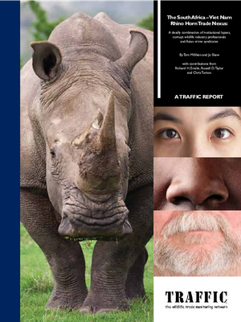
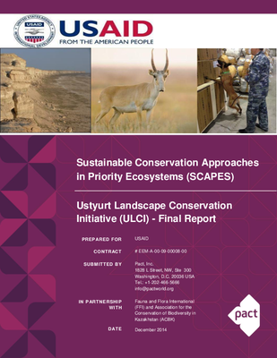
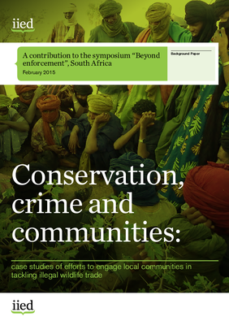
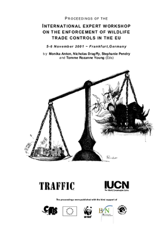
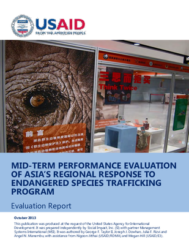

Combating Wildlife Trafficking Evidence Collection
The searchable evidence collection below is a curated set of resources compiled by the Combating Wildlife Trafficking Collaborative Learning Group based on the Theory of Change and Learning Agenda developed by the group. This collection includes published literature, grey literature, and products produced by the group.
Searching the Evidence Collection
Start searching the Evidence Collection by using the filters below (click to expand each filter)

Competences for Personnel of Protected Areas and Other Conservation Sites: A Global Register and User Guide
Effectiveness of a social marketing strategy, coupled with law enforcement, to conserve tigers and their prey in Nam Et Phou Louey National Protected Area, Lao People’s Democratic Republic

Wildlife Crime: A Guide to the Use of Forensic & Specialist Techniques in the Investigation of Wildlife Crime

Strengthening the Weakest Links: Strategies for Improving the Enforcement of Environmental Laws Globally

USAID Wildlife Asia as a case study in adaptive rigour: Monitoring, evaluation and learning for adaptive management

Conservation and Law Enforcement in Gorongosa and Niassa: A Study of the Criminal Justice Process for Wildlife Crime, from Apprehension to Incarceration

The South Africa - Viet Nam Rhino Horn Trade Nexus: A Deadly Combination of Institutional Lapses, Corrupt Wildlife Industry Professionals and Asian Crime Syndicates

Sustainable Conservation Approaches in Priority Ecosystems (SCAPES) Ustyurt Landscape Conservation Initiative (ULCI)

Conservation, Crime and Communities: Case Studies of Efforts to Engage Local Communities in Tackling Illegal Wildlife Trade

Proceedings of the International Expert Workshop on the Enforcement of Wildlife Trade Controls in the EU, 5-6 November 2001, Frankfurt, Germany
